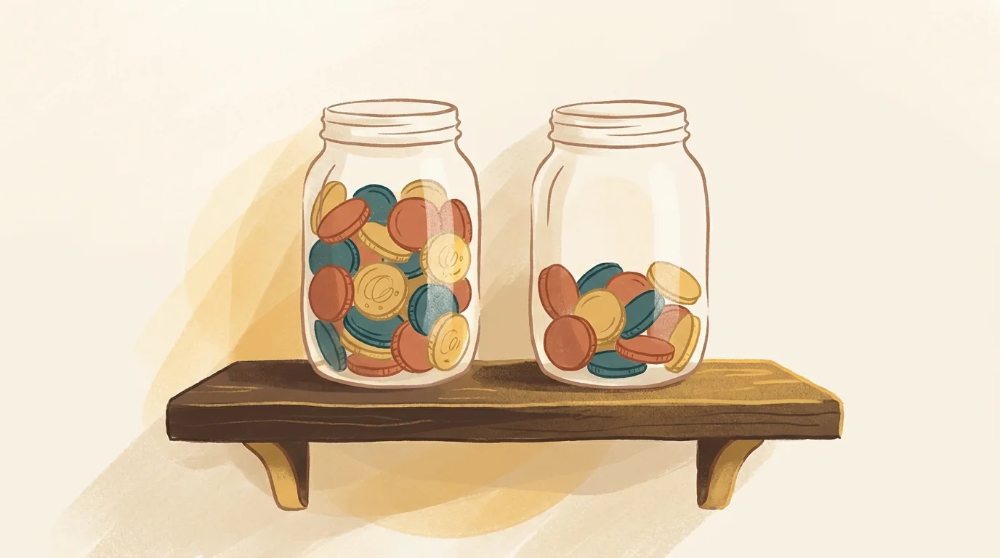

Questions to ask before you marry.
Search for questions to ask before marriage and you will find lists of a hundred, sometimes two hundred. Reading one feels like homework. Reading three feels like an exam neither of you signed up for.
Most couples don't need two hundred questions. They need about thirty good ones asked slowly, and some idea of what to do with the answers.
That second part is where the long lists go quiet. A question is only as useful as the conversation it starts. So this is a shorter list, grouped around the places where trouble tends to begin in marriages here in Bangalore, with a note under each on what to listen for.
We did not arrive at these from a textbook. Before our own wedding we sat with a premarital counsellor and found things we were already doing to hurt each other, without the words to name them. Thirteen years later, most of what we ask engaged couples comes from what that room taught us, and from the couples who have sat with us since.
What questions should you ask before marriage?
Ask about the parts of life that shape an ordinary week. Money. Your parents, and where you will live. Work, and who decides. Children. How each of you behaves in a disagreement. Faith. These are the places where differences hide during an engagement and surface in the first years. Ask fewer questions, and stay with each one longer.
How do you ask without it feeling like an interview?
Take one topic at a time in an unhurried place, and answer your own question before you ask it. A walk works better than a table with a list on it. When your partner answers, ask what shaped that view before you share yours. You are learning each other, not grading.
A few things help. Leave the list on your phone. Pick two or three questions from one section and let the rest wait for another day. Say why you are asking. "My parents fought about money for years, so I want us to talk about it early" lands very differently from a question fired across the table.
Pay attention to how the conversation feels, not only to what is said. Can the two of you stay with a difference for ten minutes without one person going quiet and the other getting sharp? That tells you as much as any answer.
What should you ask about money?
Talk about how each of you spends, what you are saving for, and what support you expect to give your parents. In many homes here that last question matters more than either salary. Money arguments in a marriage are usually about safety or loyalty underneath, so listen for those.

- What did money feel like in the house you grew up in: tight, easy, or never talked about?
- Do either of you carry loans, or promises to parents, that the other hasn't heard the full size of yet?
- How much of your income do you each expect to send home, and for how long?
- Will you keep one account, two, or both? Who will see what?
- If one of you earns much more, does that change who decides?
- What is a purchase big enough that you would want to talk first?
Listen less for the numbers and more for the ease. A partner who can say "I send my mother something every month and I don't want that to become a fight" has given you something valuable: clarity, early. The harder answer is the vague one. When support for parents only comes up after the wedding, it tends to arrive as a surprise, and surprises about money are rarely small.
What should you ask about family and where you will live?
Start with where you will live after the wedding, for how long, and who decided. If you will share a home with parents, talk through what an ordinary weekday looks like there. Ask how much say each of you expects the parents to have in your household decisions over the years ahead.
- Where will we live in the first year, and who has already assumed an answer?
- If we live with your parents, whose kitchen is it? Who decides what is cooked?
- When your mother and I disagree, what do you expect to do?
- How often will we visit each other's parents? For festivals, whose home comes first?
- What would make you feel your family was being pushed away?
This is the section engaged couples most often rush, because talking about parents this way can feel disloyal. It isn't. In our experience, the couples who do well with in-laws are the ones who agreed early that they are on the same side of whatever the families want. Listen for whether your partner can imagine standing with you, gently, when their parents disagree with you. Nobody needs to take a side against a parent. What matters is whether the two of you will decide together.
What should you ask about work and who decides?
Find out whether both of you plan to keep working after the wedding and after children, and what would change that. Ask how you will decide the things neither of you can decide alone: a job in another city, a big purchase, a parent moving in. Roles matter, but agreeing on them on purpose matters more.
- Do you expect to keep working after we marry? After children?
- If one of us is offered a job in Pune or Dubai, how do we decide?
- Who do you picture handling the house: bills, repairs, the school forms?
- What did your parents' division of work look like, and do you want the same?
- When we can't agree, who has the final word? Is there one?
One of the four things we tell every couple comes straight from our own marriage. Roles matter, and being intentional about them matters more. Many of the quarrels couples describe to us as happening "for no specific reason" turn out to be about roles nobody ever chose. One partner assumed. The other went along. A few years later the arrangement quietly stopped being fair, and neither could say when. Talking about it now costs an evening.
What should you ask about children?
Ask whether you both want children, and roughly when. Ask what you would do if it takes longer than you hope. Then ask who you picture doing the night feeds and the school runs, how much help you expect from grandparents, and how each of you was disciplined growing up.
- Do you want children? If yes, when would feel right?
- If children don't come easily, what would we be open to?
- How were you disciplined, and what would you keep or change?
- How much should grandparents help raise them, and decide for them?
- Which language or languages do you want our children to grow up speaking?
Couples tend to agree on wanting children and disagree on nearly everything after that. Parents here often hold strong views on timing, and those views can arrive as pressure within weeks of the wedding. Listen for whether your partner has thought about how the two of you will answer that pressure together, kindly, as a couple.
What should you ask about disagreements?
Learn how each of you behaves when you are truly upset, and what you need in that moment. One person may need an hour of quiet. The other may need to settle it before sleeping. Neither is wrong, and knowing it now spares you a hard lesson in your first real fight.
- When you're hurt, do you go quiet, get louder, or leave the room?
- What did arguments sound like in your home growing up?
- What small thing could I do that would feel like respect when we disagree?
- Is there anything you have seen in other marriages that you never want in ours?
- How do you like to be comforted, and how do you show love?
Early in our own marriage, the way we spoke to each other when we were upset was doing damage neither of us intended. The words were rarely the problem. Tone was. So was what our faces said while the words stayed polite. With time and some help, we learned to speak with respect even in the middle of an argument. It changed the marriage.
The last question on that list matters more than it looks. We took it from Gary Chapman's book The Five Love Languages, which describes how people tend to give love in the form they most want to receive it. A spouse who speaks a different "language" can work hard for years without feeling heard. Finding out how your partner feels loved, before the wedding, is one of the kindest things you can do.
What should you ask about faith?
Talk about what faith means to each of you now, what you expect it to look like in your home, and how you would want children to meet it. This matters for couples who share a faith as much as for couples who don't. Parents often hold stronger views on it than the two of you do.
We are a faith-informed practice, and we say so openly. We also work with many couples who want none of that, and this conversation is just as useful for them. If faith matters deeply to one of you and lightly to the other, that is worth knowing while it is still a conversation rather than a disagreement.
- What part does faith play in your week, honestly?
- Do you expect us to worship together? Where?
- Which festivals or practices in your home matter to you, and which don't?
What if yours is an arranged marriage?
Use the same questions, in smaller pieces, across the meetings you have. Early meetings suit the easier ones: work, a normal weekend, what each of you hopes marriage will feel like. Keep money and in-laws for once some trust has formed, and ask them of each other directly rather than through relatives.
An arranged introduction has its own shape. You are getting to know each other and preparing to marry at the same time, on a timeline someone else largely set, often with relatives close by for the first few meetings. It is easy to spend those meetings being pleasant and learn very little.
Both of you should ask. The lists online are often framed as questions to ask a girl, or questions to ask a boy, as if one person is interviewing the other. A marriage that begins with one person being assessed begins lopsided.
For the first meetings, when parents may be nearby:
- What does a good Sunday look like for you?
- What made you agree to meet?
- What do you hope will be different about our marriage from the ones you grew up around?
- Is there something you would want me to hear early, rather than later?
For later, once you can speak privately:
- Is there anything your parents expect of me that you haven't mentioned?
- Is any part of this match something you are unsure about?
- How much of this decision feels like yours?
That last question takes courage to ask and more to answer. It is also the one we most wish more couples asked. A yes that belongs to both people is a far better foundation than one that belongs mostly to their parents.
Here is a pattern we see often, described as a composite rather than any real couple. Two people meet through their parents in the spring and are engaged by early summer. They like each other. Neither asks where they will live, because everyone seems to know the answer. After the wedding, one of them expected a flat of their own within the year. The other had never imagined leaving the family home. Nobody lied. The question never came up, and now it arrives as an argument about loyalty instead of a plan they made together.
What if your answers don't match?
Some of them won't, and that is the reason to ask now. Sort the differences into two groups: the ones you can meet in the middle on, like how often to visit parents, and the ones that need a longer conversation, like whether to have children or where you will live. The second group is worth taking to a counsellor.
A difference is not a warning sign. Every good marriage we know is made of two people who disagree about plenty and have learned how to decide together. What counts is whether you can talk about a difference without it becoming a contest.
Helping couples do exactly that is most of what premarital counselling is. You bring the questions you could not settle on your own, and we help you stay in the conversation long enough to reach an answer you both own. If you want to see what that looks like, we have written about what actually happens in premarital counselling.
One more thing, said plainly. If a conversation leaves you afraid rather than unsure, because your partner mocked you, threatened you, or reacted in a way that frightened you, that is different from a disagreement. Please talk it through with someone you trust outside both families before going further.
Common questions
How many questions should we ask before marriage? Fewer than the lists suggest. Around thirty good questions, asked over several conversations, will tell you more than a hundred asked in one evening. The goal is understanding each other, not finishing a list.
Is it too late to ask these after the engagement? No. After the engagement is when most couples first ask them seriously. The weeks before a wedding are busy, so set aside a few quiet evenings and protect them.
Should our parents be part of these conversations? Some of them, later. Parents can help with questions about living arrangements and what the two homes expect. Questions about money between you, or about intimacy or how you argue, belong to the two of you first.
Can we talk these through with you in Tamil or Kannada? Yes. We counsel in Tamil and Kannada as well as English, and many couples find they are more honest in the language they grew up speaking.
Do we need a counsellor to ask these questions? No. Many couples work through them on their own and do well. A counsellor helps most with the questions you find you cannot finish, and an assessment such as Prepare/Enrich can surface differences you would not think to ask about.
Where to begin
Pick one section tonight, not the whole list. Money is a good place to start, because it is often the one both people are quietly avoiding. Ask one question, answer it yourself first, and then listen for longer than feels comfortable.
If something comes up that you would rather not carry alone, a free, confidential first call is the easiest next step. You can also read how we work with engaged couples before you decide.
Written by Pradeep Mcwin (M.A., Marriage and Family Counselling) and Gomathi Mcwin (Diploma, Marriage and Family Counselling), who have practised together in Bangalore for over five years and have been married for thirteen.
This article is for information and is not a substitute for personal counselling. Every relationship is different. If something here sounds like your situation, start with a free, confidential 30-minute call.